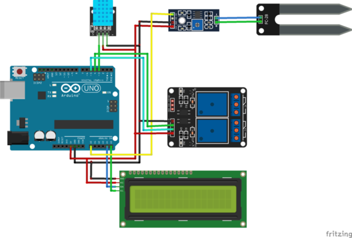

Penyiraman Tanaman Otomatis Berbasis IoT
Berikut merupakan User Interface pada Project yang kami buat
Tugas UTS
Pada tugas Ulangan Tengah Semester (UTS) ini kelompok kami merancang suatu sistem pemantauan serta penyiraman tanaman secara otomatis dengan membaca kadar kelembaban yang ada di dalam tanah dan suhu ruangan. Hasilnya adalah sistem ini dapat memberikan kebutuhan air yang tepat untuk tanaman dan suhu ruangan yang ada. Kemudian sistem mengirimkan informasi ke halaman website yang telah dibangun agar pengguna dapat memonitor tanamannya kapanpun dan dimanapun.
